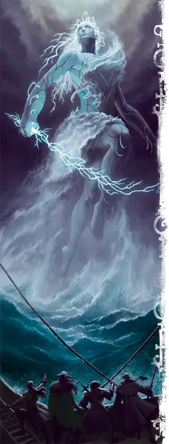

Отпрыск Стронмауса
Scion of Stronmaus
Громадный Великан (Титан), обычно хаотично-добрый

Класс Доспеха 20 (природный доспех)
Хиты 656 (32к20 + 320)
Скорость 60 футов, плавая 80 футов, летая 80 футов (парит)
| мод | спас | ||
|---|---|---|---|
| СИЛ | 30 | +10 | +10 |
| ЛОВ | 20 | +5 | +13 |
| ТЕЛ | 30 | +10 | +10 |
| мод | спас | ||
|---|---|---|---|
| ИНТ | 26 | +8 | +16 |
| МДР | 28 | +9 | +9 |
| ХАР | 24 | +7 | +7 |
Навыки Восприятие +17, История +16, Магия +16
Сопротивление урону огонь, холод; немагический дробящий, колющий, рубящий
Иммунитет к урону звук, электричество
Чувства истинное зрение 120 футов, пассивное Восприятие 27
Языки Великаний, Первичный
Опасность 27 (105000 опыта)
Бонус мастерства +8
Особенности
Пролёт. Отпрыск не провоцирует атаку, когда она вылетает за пределы досягаемости врага.
Легендарное сопротивление (6/день). Если отпрыск проваливает спасбросок, он может вместо этого сделать спасбросок успешным.
Сопротивление магии. Отпрыск совершает с преимуществом спасброски от заклинаний и прочих магических эффектов.
Осадный монстр. Отпрыск наносит двойной урон объектам и сооружениям.
Действия
Мультиатака. Отпрыск совершает одну атаку используя Меч молний или Град, а так же две атаки Размашистым ударом.
Меч молний. . Рукопашная атака оружием: + 18 к попаданию, досягаемость 30 футов, одна цель. Попадание: 36 (4к12 + 10) урона силовым полем плюс 22 (4к10) урона электричеством.
Град. . Дальнобойная атака оружием: +18 к попаданию, дистанция 120/480 футов, одна цель. Попадание: 32 (4к10 + 10) дробящего урона плюс 18 (4к8) урона холодом, и цель должна преуспеть в спасброске Силы Сл 26, иначе упадёт ничком.
Размашистый удар. . Рукопашная атака оружием: + 18 к попаданию, досягаемость 20 футов, одна цель. Попадание: 36 (4к12 + 10) урона силовым полем.
Бонусные действия
Мстительный шторм (перезарядка 6). Отпрыск вызывает вихрящееся грозовое облако в виде цилиндра радиусом 30 футов и высотой 10 футов с центром в точке на расстоянии 120 футов. Область облака сильно заслонена. Облако существует 1 минуту, пока отпрыск не умрет или пока наследник снова воспользуется этим бонусным действием.
При появлении облака и в качестве бонусного действия в следующих ходах отпрыск может переместить облако на 30 футов и вызвать один из следующих эффектов в цилиндре радиусом 30 футов и высотой 120 футов непосредственно под ним; отпрыск не может выбирать один и тот же эффект два раунда подряд:
• Кислотный дождь. Облако изливается кислотным дождем. Каждое существо в цилиндре должно преуспеть в спасброске Телосложения Сл 25, иначе будет покрыто кислотой на 1 минуту или до тех пор, пока существо действием не удалит кислоту с себя или другого существа. Существо, покрытое кислотой, получает 26 (4к12) урона кислотой в начале каждого своего хода.
• Ледяной шторм. Осколки льда падают вниз, а ледяной ветер наполняет все вокруг. Каждое существо в цилиндре должно преуспеть в спасброске Ловкости Сл 25, иначе получит 28 (8к6) урона холодом и будет покрыто ледяной коркой в течение 1 минуты или до тех пор, пока оно или другое существо, находящееся в пределах досягаемости, действием не разобьёт лед. Скорость существа покрытого льдом снижается до 0.
• Сверкающие молнии. Удары молний бьют вниз. Каждое существо в цилиндре должно преуспеть в спасброске Ловкости Сл 25, иначе получит 18 (4к8) урона электричеством и станет ошеломлённым до конца своего следующего хода.
Местные эффекты
Область, окружающая отпрыска Стронмауса, изменяется под действием магии великана, создавая один или несколько из следующих эффектов:
• Элементальные порталы. Двусторонние порталы на Элементальный план Воздуха (если отпрыск находится в небе) или Элементальный план Воды (если отпрыск находится в океане) образуются в пределах 1 мили от колыбели или отпрыска, позволяя элементальным существам появляться в мире.
• Наделенные силой штормовые великаны. Штормовые великаны находящиеся в пределах 1000 футов от отпрыска получают бонус +8 к броскам атаки и урона.
• Экстремальная погода. Погода в пределах 1 мили от отпрыска резко меняется изо дня в день, варьируясь от приятно солнечной до свирепых гроз с градом.
Если отпрыск погибает, эти эффекты мгновенно прекращаются.
Описание
Великаны происходят от Всеотца Аннама и его детей. Но отпрыски богов великанов могут похвастаться большими претензиями: они внуки Аннама и занимают привилегированное место среди великанов. В некоторых мирах эти отпрыски правили первыми империями великанов, пока Аннам не удалился в уединение. В других мирах отпрыски охраняют места своего рождения (которые богаты магией стихий) или удерживают субстанцию мира вместе.
Отпрыски богов великанов - невероятно могущественные существа, которые наполняют окружающий мир первобытной магией. Во многих мирах они дремлют и стали частью ландшафта. В этом случае каждый отпрыск заключен в стазис внутри могущественного элементаля, называемого колыбелью. Колыбель защищает спящего отпрыска и следует его подсознательным желаниям, в том числе отгоняя незваных гостей. Но если колыбель погибает, отпрыск внутри полностью пробуждается.
Штормовой ОТПРЫСК
Отпрыск Стронмауса часто дремлет высоко в небе или глубоко в океане, где суматоха, вызываемая беспокойным сном отпрыска, мало влияет на окружающий мир. Если он дрейфует слишком близко к земле или поверхности океана, это вызывает сильные штормы или свирепые водовороты. Сон наследника наполнен снами, варьирующимися от вдохновляющих видений возвращения Аннама до меланхоличных пророчеств о неизбежном упадке, от радостных проблесков идиллического прошлого до ужасающих кошмаров о мучениях и опустошении.
Колыбель штормового отпрыска начинает действовать не только тогда, когда отпрыску угрожает опасность, но и в том случае, если сон отпрыска нарушен кошмарами. Когда колыбель пробуждается, она приобретает форму смутно напоминающую великана, состоящую из яростно кружащихся воздуха, воды и льда.
Если колыбель разрушена, отпрыск Стронмауса внутри нее пробуждается. Одно из самых могущественных созданий всего рода великанов, отпрыск достигает 80 футов в высоту. Он часто находит некоторое облегчение в пробуждении и освобождении от своих тревожных снов, поэтому не обязательно прибегает к насилию, когда выходит из своей колыбели. Но его не особенно интересуют гуманоиды или другие маленькие существа — ни общение с ними, ни защита от вреда, который они могут причинить.
Если отпрыску угрожает опасность, он высвобождает мощь стихий, на которую способны немногие другие силы в мультивселенной: клинки молний, градины размером с валун и ураган из бушующих стихий..